01 / 产品全貌
从单个 Agent 到多节点编排
Smart 提供三种构建方式，适应不同复杂度的任务。单 Agent 把指令、模型和可调用资源集中在一起；任务需要分工时，可以使用多 Agent；执行顺序和判断条件需要明确控制时，则使用 Workflow。
Multi Agent · 组织分工与协作
画布呈现多个 Agent 的关系，节点卡片显示所用模型与挂载资源，右侧预览区用于观察它们如何共同完成任务。构建者既需要看懂全局，也需要进入局部调整。
Smart 项目设计稿
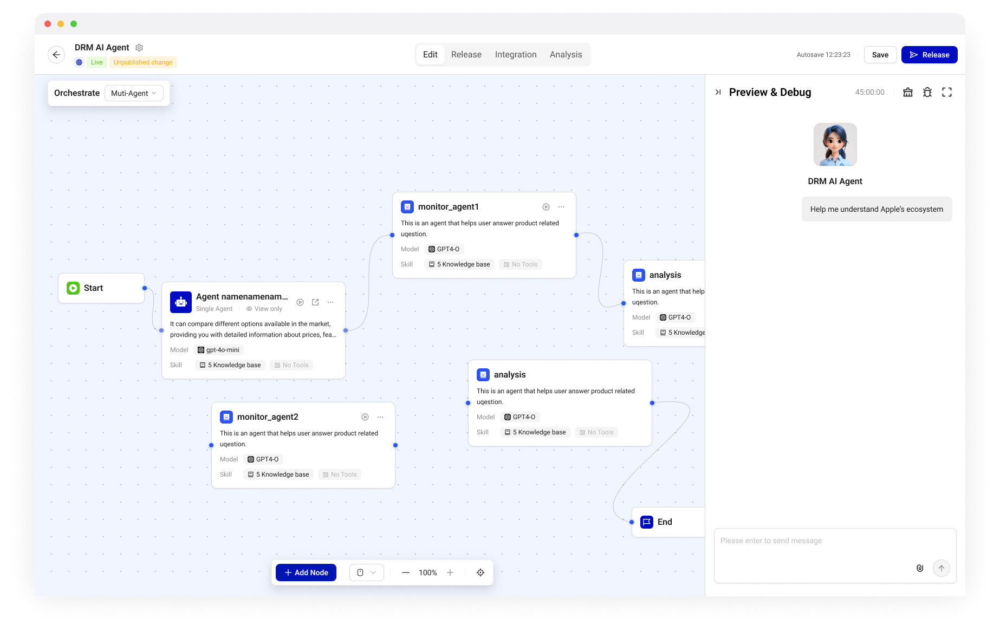
Workflow · 明确执行路径
将任务拆成节点，连接输入、处理与输出，并通过条件组织分支。画布上的连线因此承担执行含义，节点也必须清楚表达自身的类型与能力。
Smart 项目设计稿
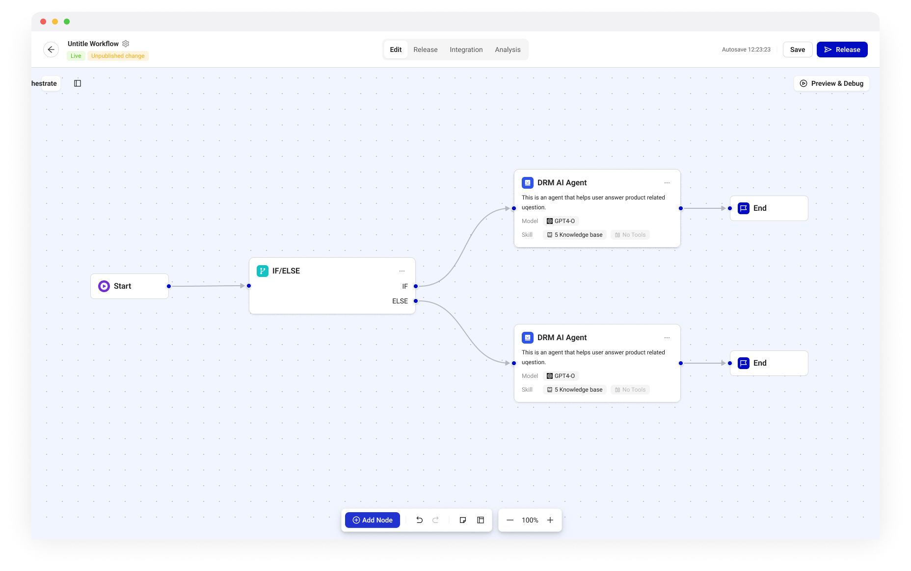
02 / 节点类型
同在一张画布上，节点的编辑边界并不相同
共建业务组件时，首先要把这些区别梳理清楚。Node Card 将名称、类型、功能说明、连接点和关键配置放在画布上，让构建者不用逐一打开面板，也能判断一个节点的作用。
三类节点，三种使用方式
自建节点
在当前 Workflow 或 Agent 中创建，可完整编辑。
Smart 业务组件共建资料
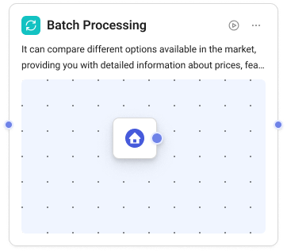
已发布节点
引用已发布的 Agent 或 Workflow，作为封装好的整体使用，在当前画布中仅可查看。
Smart 业务组件共建资料
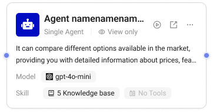
起止节点
标识流程边界，保留轻量结构。
Smart 业务组件共建资料
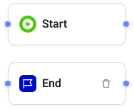
节点类型之外，还要表达选中、执行成功或出错等状态。类型说明“这是什么”，状态说明“它现在怎样”，两者需要同时成立。
查看节点的交互与运行状态
Smart 业务组件共建资料
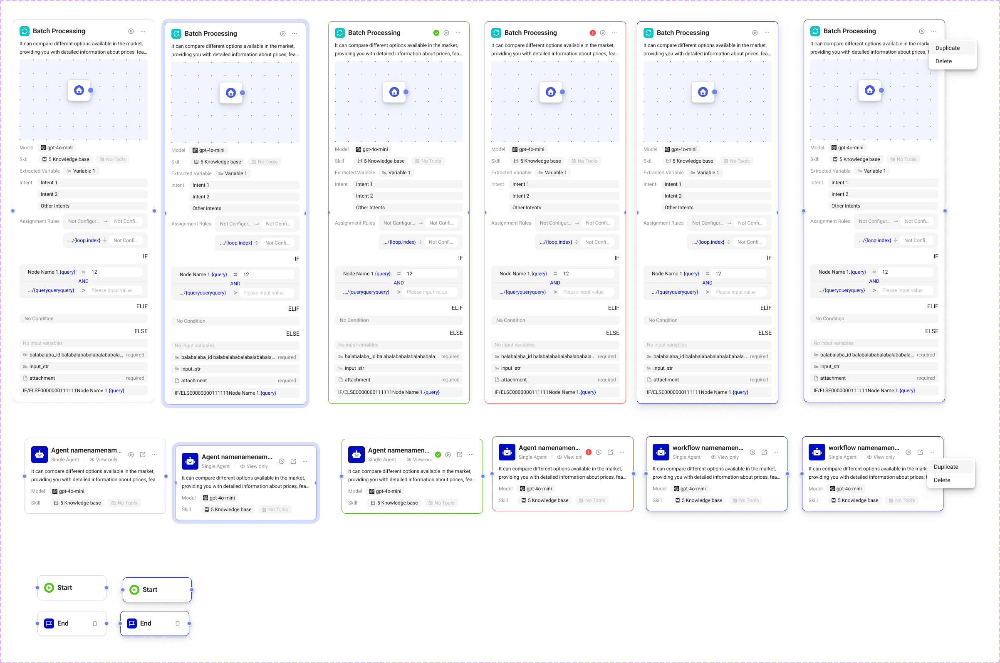
03 / 资源可用性
资源已经挂载，不代表此刻能够使用
工具或知识挂载到 Agent 后，仍可能受到配额或权限限制。卡片需要把资源信息、可用状态与下一步操作放在同一处：平时显示名称、描述及配置入口，出现问题时再补充提示与处理方式。
Smart 业务组件共建资料
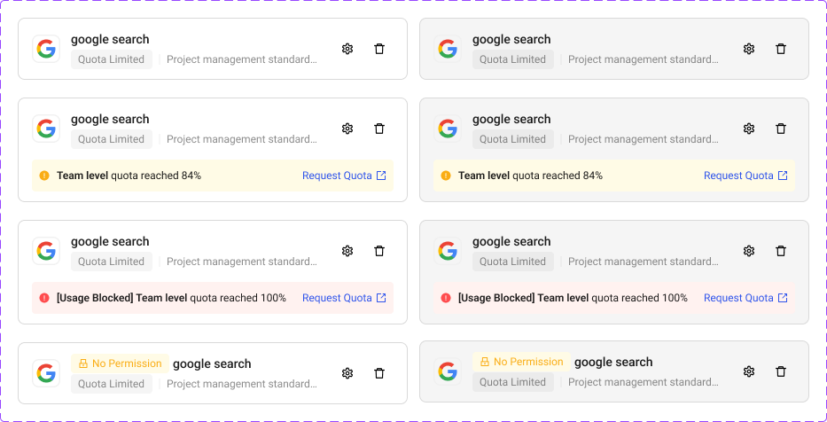
资源目录里的卡片，承担另一种任务
App、Tool 与 Gallery 卡片服务于浏览、发现和选择。它们按对象组织信息；挂载后的卡片则侧重当前配置中的可用性。同样叫“资源卡片”，信息重点与操作不能照搬。
按对象组织目录信息
App Card
突出应用类型、发布状态与管理信息。
Smart 业务组件共建资料
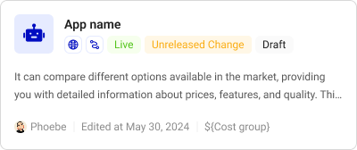
Tool Card
展示工具的类别、来源与调用信息。
Smart 业务组件共建资料
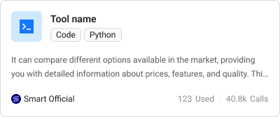
Gallery Card
通过描述、标签与作者信息介绍应用。
Smart 业务组件共建资料
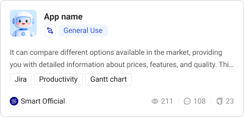
04 / 配置结构
可增减的资源，与相对固定的参数
配置面板里，一类内容是可以不断添加或移除的工具与知识，另一类是结构相对固定的功能参数。两者共用区块层级，内部则采用不同结构。
AssetList · 管理资源条目
Smart 业务组件共建资料
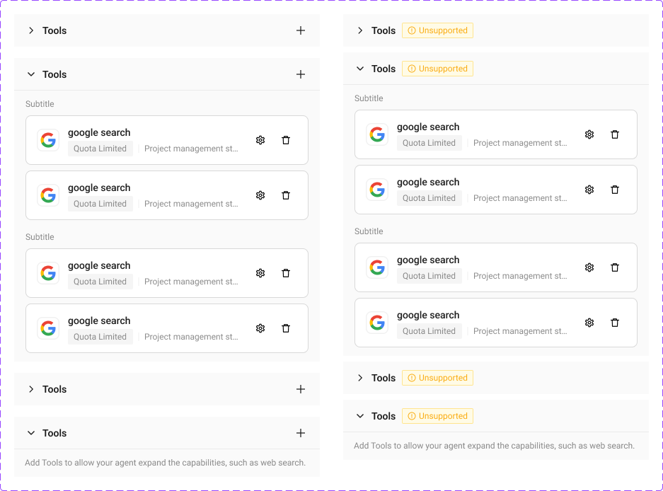
ParamGroup · 组织功能参数
Smart 业务组件共建资料
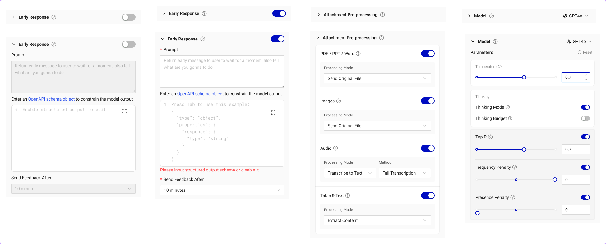
展开区块与启用功能也要分开表达：展开决定能否看到配置内容，启用决定功能是否生效。结构相近的配置区，仍需要保留这样的业务差异。
05 / 预览与调试
从最终回答，回到具体的执行过程
构建者需要检查的不只是回答，还包括执行经过了哪些节点、调用了什么能力，以及问题出现在哪里。预览与调试将对话结果、执行过程和节点信息联系起来，为下一次调整提供依据。
Smart 项目设计稿
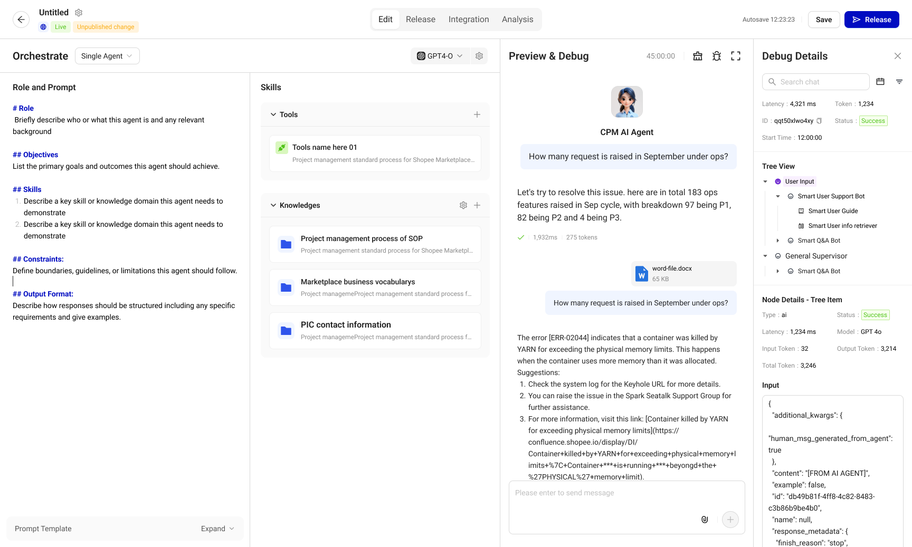
查看调试组件与工作区导航
Smart 业务组件共建资料
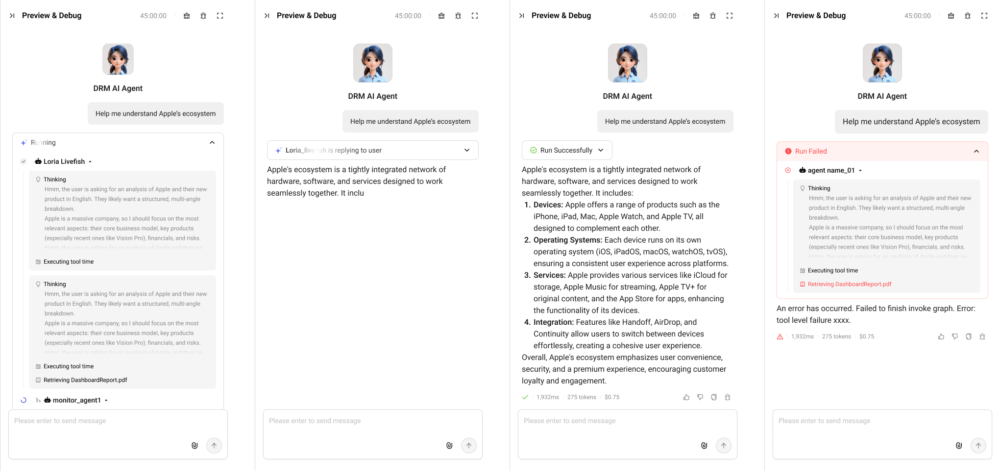
Smart 业务组件共建资料
Smart 业务组件共建资料
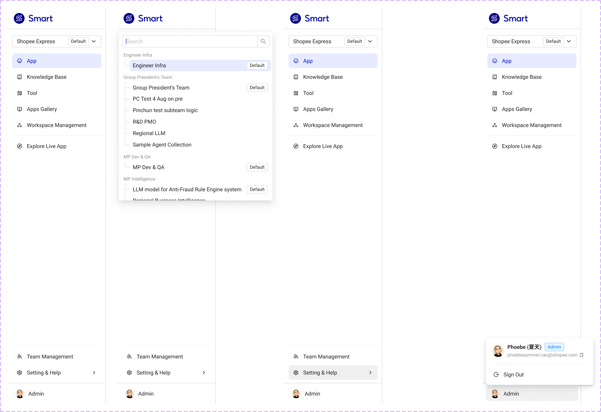
06 / 主题接入
让业务组件继续使用共用的设计基础
Smart 使用 InfraD 的基础组件与主题配置，同时发展适合 Agent 构建的业务组件。项目文件选择对应的颜色、尺寸与组件模式；组件组合后继续引用共用变量，必要的局部差异则在评审中讨论。
Smart 项目设计文件 · 主题模式
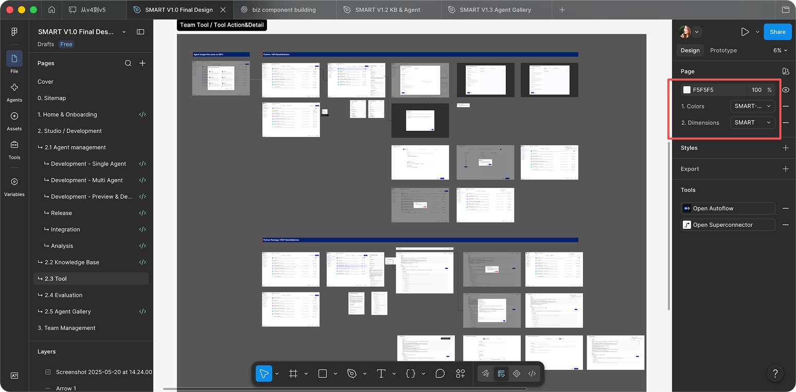
07 / 项目之后
留下组件经验，也留下一个问题
Smart 后来没有继续推进，这里保留的是当时的设计方案与组件探索。随着模型能力变化，哪些结构仍然有用，哪些投入会很快失去价值？这段经历也成为我重新思考 AI 产品设计的起点。
部分界面细节涉及企业内部信息，可在面试交流中结合 Figma 源文件展开介绍。